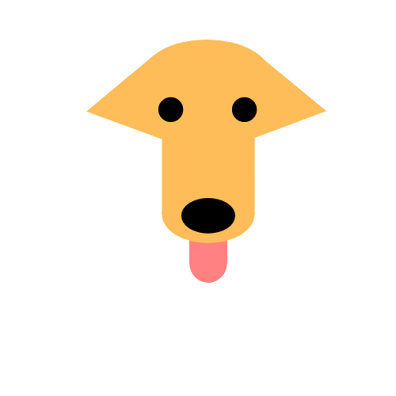
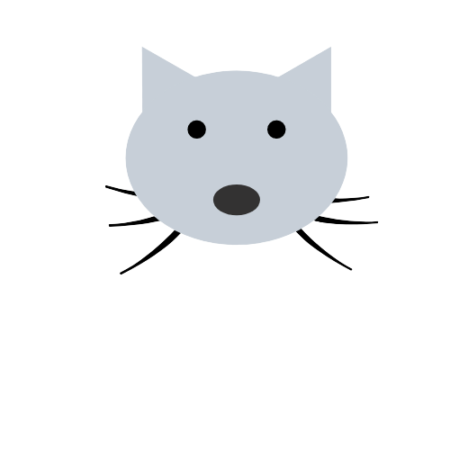

<ion-app>
  <ion-toolbar *ngIf='isMobile() && loginService.isLoggedIn()' class='mobile-bar'>
    <ion-text class='mobile-w'><h2>Whisker</h2></ion-text>
    <ion-avatar slot='end' class='app-avatar mobile' (click)='openMenu()'>
       1 && loginService.isLoggedIn()' type="image/png" style="width:50%; object-fit:resize;" [src]='loginService.user.imageUrl'; else type="image/png" src="../assets/icon/dog_favicon.png">
       1 && loginService.isLoggedIn()' type="image/png" style="width:50%; object-fit:resize;" [src]='loginService.user.imageUrl'; else type="image/png" src="../assets/icon/cat_favicon.png">
      
      
    </ion-avatar>
  </ion-toolbar>
  <ion-toolbar *ngIf='!isMobile() && loginService.isLoggedIn()' class='desktop-bar'>
    <ion-text class='desktop-w' slot='start'><h2>W</h2></ion-text>
    <ion-buttons slot='start' class='desktop-nav-buttons'>
      <ion-button routerLink='/home' class='desktop-nav-button' routerLinkActive='active'>Home</ion-button>
      <ion-button routerLink='/browsePets' class='desktop-nav-button' routerLinkActive='active'>Browse Pets</ion-button>
      <ion-button routerLink='/messages' class='desktop-nav-button' routerLinkActive='active'>Messages</ion-button>
    </ion-buttons>
    <ion-avatar slot='end' class='app-avatar' (click)='openMenu()'>
       1' type="image/png" style="width:50%; object-fit:resize;" [src]='loginService.user.imageUrl'; else type="image/png" src="../assets/icon/dog_favicon.png">
       1' type="image/png" style="width:50%; object-fit:resize;" [src]='loginService.user.imageUrl'; else type="image/png" src="../assets/icon/cat_favicon.png">
      
      
    </ion-avatar>
  </ion-toolbar>
  <ion-router-outlet id='main'></ion-router-outlet>
    <ion-tabs>
      <ion-tab-bar slot="bottom" *ngIf='isMobile() && loginService.isLoggedIn()'>
        <ion-tab-button tab="browsePets">
          <ion-icon name="search"></ion-icon>
          <ion-label>Browse Pets</ion-label>
        </ion-tab-button>
        <ion-tab-button tab="home">
          <ion-icon name="paw"></ion-icon>
          <ion-label>Home</ion-label>
        </ion-tab-button>
       <ion-tab-button tab="messages">
         <ion-icon name="chatbox"></ion-icon>
         <ion-label>Messages</ion-label>
       </ion-tab-button>
      </ion-tab-bar>
    
    </ion-tabs>
    <ion-menu side="end" menuId="main" contentId="main">
      <ion-header>
        <ion-toolbar color="light">
          <ion-title *ngIf='loginService.user'>Hello, {{loginService.user.firstname}}!</ion-title>
        </ion-toolbar>
      </ion-header>
      <ion-content>
        <ion-list>
          <ion-item class='menu-item no-select' lines='none' *ngIf='this.loginService.user && this.loginService.user.admin' routerLink='/admin'>
            <ion-icon slot='start' name='settings-outline' color='danger' class='menu-icon'></ion-icon>
              <ion-label>Admin</ion-label>
          </ion-item>
          <ion-item class='menu-item no-select' lines='none'>
            <ion-icon slot='start' name='person-circle-outline' color='primary' class='menu-icon'></ion-icon>
            <ion-label>My Profile</ion-label>
          </ion-item>
          <ion-item class='menu-item no-select' lines='none' routerLink='/adoption-survey'>
            <ion-icon slot='start' name='search-outline' color='secondary' class='menu-icon'></ion-icon>
            <ion-label>Search Preferences</ion-label>
          </ion-item>
          <ion-item class='menu-item no-select' lines='none'>
            <ion-icon slot='start' name='settings-outline' color='tertiary' class='menu-icon'></ion-icon>
            <ion-label>Settings</ion-label>
          </ion-item>
          <ion-item class='menu-item no-select' lines='none' (click)='changeTheme()'>
            <ion-icon name='sunny-outline' class='menu-icon' *ngIf='!settingsService.isDarkMode()'></ion-icon>
            <ion-icon name="moon-outline" class='menu-icon' *ngIf='settingsService.isDarkMode()'></ion-icon>
            <ion-label>Change Theme</ion-label>
          </ion-item>
          <ion-item class='menu-item no-select' lines='none'>
            <ion-icon slot='start' name='paw-outline' color='success' class='menu-icon'></ion-icon>
            <ion-label>About Whisker</ion-label>
          </ion-item>
          <ion-item class='menu-item no-select' lines='none' (click)='logout()'>
            <ion-icon slot='start' name='log-out-outline' color='warning' class='menu-icon'></ion-icon>
            <ion-label>Logout</ion-label>
          </ion-item>
        </ion-list>
      </ion-content>
    </ion-menu>
</ion-app>
